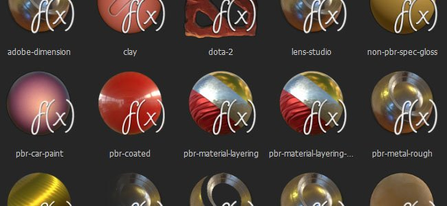

Substance Painter uses shaders to render materials in its realtime viewport. It is possible to write custom shaders to implement new behaviors or to simply make the viewport match other renderers.
Additional shaders for Substance Painter can be found on Substance Share.
The Shader API is also available directly from the application, by going into the menu Help > Documentation > Shader API.
In Substance Painter, you can write your own shaders in GLSL. We allow you to write only a portion of the fragment shader, which is sometimes called a surface shader. Without further ado, let's introduce the "Hello world" Substance Painter surface shader:
void shade(V2F inputs) {
diffuseShadingOutput(vec3(1.0, 0.0, 1.0));
}
Now, if you save this snippet into a .glsl file and load it into Substance Painter by dropping it into your shelf's shader tab, you can now use it and see a beautiful uniform pink color on your mesh.
In Substance Painter, you can access rendering engine parameters (document's channels, additional textures, camera-related data and the like). Here is an exhaustive list of all engine provided parameters :
In some cases you may want to use a specific rendering configuration (culling, blending, sampling locality, and the like) for an effect. Some rendering states are exposed and can be set in the shader. Here is an exhaustive list of all exposed rendering states :
It's usual to have custom tweaks in a shader. To do so in Substance Painter's shaders, we have introduced a way to specify custom tweaks. Here is an exhaustive list of all custom shader tweaks types :
In order to avoid writing a lot of boilerplate code in all of your shaders, we created a small yet practical library of useful functions. Please note that you can't edit it nor create your own at the moment.
You can declare additional non required information to give some hint to the rendering system. Here is the syntax:
//: metadata {
//: "key1":"value1",
//: "key2":"value2"
//: }
Supported keys are:
To get a taste of what looks like a real shader, here are a few sample shader, ordered by increasing complexity:
The Dynamic Material Layering is a specific workflow where materials are mixed together inside a shader and let the user dynamically edit blending masks in Substance Painter. To enable this workflow, there are two new functionalities: